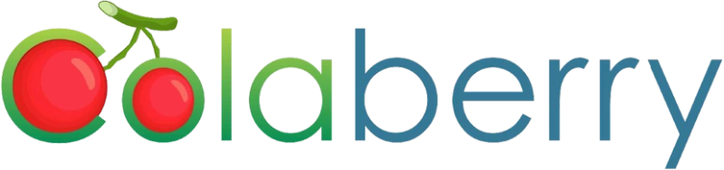

Proposal · Top-of-funnel contentWe split the week into five content blocks. One video ships every day, so our channels keep getting pushed by the algorithm — and some of those videos get the chance to go viral.
Colaberry scripts become finished videos in Google Flow — skits, talking animals, anything we can write.
Short scripted episodes built for the scroll — a hook, a twist and a reason to watch the next one.
Ali's avatar covers what's happening in AI — the latest news, tutorials and breakdowns.
AI actors deliver our scripts on camera — new faces every week, no shoot days.
Ali's recorded videos, re-cut into reels and long-form episodes.
Five videos a week — one every day
Monday to Friday, a new video on every channel.
Channels get pushed into the algorithm
Daily posting keeps every channel in the recommendation feed.
More views
Reach compounds week over week.
Some go viral
Five shots a week at a breakout.
Top of the funnel: more people discover Colaberry School of Data and AI every week.
Colaberry scripts become finished videos in Google Flow — skits, talking animals, anything we can write.
Short scripted episodes built for the scroll — a hook, a twist and a reason to watch the next one.
Ali's avatar covers what's happening in AI — the latest news, tutorials and breakdowns.
AI actors deliver our scripts on camera — new faces every week, no shoot days.
Ali's recorded videos, re-cut into reels and long-form episodes.
Top of the funnel: more people discover Colaberry School of Data and AI every week.